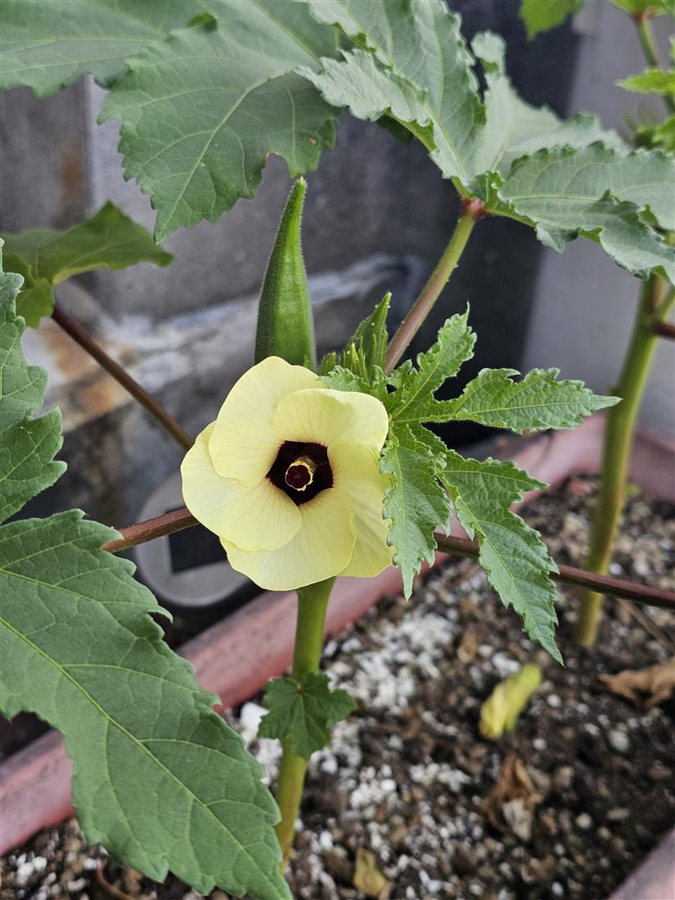
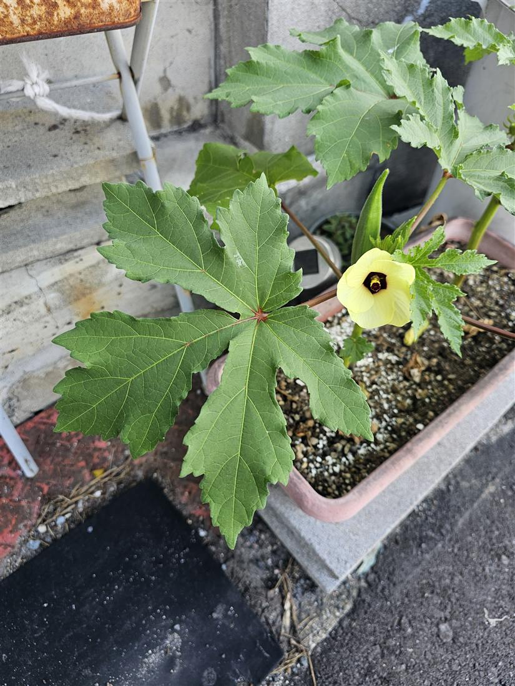

地図を読み込んでいるよ…
🔍 写真も地図も、押しているあいだ拡大して見られるよ（スマホは指を置いてすこし待ってね）。
🌍 の地図＝この子がもともと自生している場所を緑に。東アフリカ（エチオピア・エリトリア・スーダン東部）が有力な原産地。ただし本当の野生種がはっきりせず、西アフリカ起源説もあって断定はできない。そこからアラビア半島・地中海沿岸・ヨーロッパ・南北アメリカへ広まった。日本へは幕末〜明治に渡来し、広く食べられるようになったのは昭和40〜50年代ごろから。
⭐原産は東アフリカ——エチオピア・エリトリア・スーダン東部あたりが有力なふるさと。そこからアラビア半島→地中海→ヨーロッパ→アメリカへ広まった。⚠本当の野生種がはっきりしなくて、西アフリカ起源説もあるから、この緑は「いちばん有力な場所」だと思ってね。⚠日本は塗っていない——このオクラはプランターに植えられた夏野菜で、日本はふるさとじゃないよ（066トマト＝南米・090キュウリ＝ヒマラヤと同じ、遠くから来た野菜）。
⚠ 地図は国（日本と中国だけ県・省）までしか塗れないから、ほんとうの分布より広く見えていることがあるよ。地図はだいたいの場所。正確なところは、上の文を見てね。
オクラ
Abelmoschus esculentus
別名 · アメリカネリ／陸蓮根（おかれんこん）／ 原産 · 東アフリカ（エチオピアあたり）／ 花期 · 7〜9月の一日花／ ⭐食べるのは花の下の若い実（さや）
アオイ科 · Malvaceae（トロロアオイ属 Abelmoschus）── 038酔芙蓉と同じ科
燻太さんの見立て「プリンみたいなカラーリングで美味しそう。実もシャクっととろり。とろろと合わせても、カレーにいれても天ぷらにしても美味しいよね。」──当たり。オクラで確定。決め手は上を向いた実（さや）だった。
名前と学名の由来 ── 「ムスクの種の、食べられる草」
- ⭐和名「オクラ」は、めずらしく英語 okra をそのままカタカナにした名前。その英語のもとをたどると、西アフリカのイボ語 ọ́kụ̀rụ̀（オクル）にたどりつく（Wikipedia「Okra」）。大西洋をわたる船で、この野菜がアフリカからアメリカ大陸へ運ばれたときの呼び名なんだ。──「野菜の名前」がそのまま「アフリカの言葉」なの、ちょっとすごいでしょう。
- ⭐日本の古い名前は「アメリカネリ」や「陸蓮根（おかれんこん）」。切ると断面が星形で、ネバネバして蓮根（れんこん）みたいだから「陸（おか）の蓮根」。今でもたまに聞く呼び名だよ。
- ⭐⭐属名 Abelmoschus（アベルモスクス）は、アラビア語の abu-l-misk「麝香（じゃこう＝ムスク）の父」＝「ムスクの種」。──種をつぶすと、甘いムスクのような香りがすることから（Wikipedia「Abelmoschus」）。
- 種小名 esculentus は、ラテン語で「食べられる・食用の」。──つまり学名ぜんぶで、「ムスクのいい香りの種の、食べられる草」って言っているんだ。名前が、香りと味を先に教えてくれてる。
この植物のこと
- アオイ科トロロアオイ属の一年草（毎年たねから育つ草）。038酔芙蓉（スイフヨウ）やハイビスカス、ムクゲと同じアオイ科だよ。だから、あのクリーム色に濃い赤紫の中心の花が、フヨウやハイビスカスにそっくりなんだ。
- 原産は東アフリカ（エチオピア・エリトリア・スーダン東部あたり）が有力。そこからアラビア半島 → 地中海 → ヨーロッパ → 南北アメリカへと広まった。日本へは幕末〜明治に来て、みんなが食べるようになったのは昭和40〜50年代ごろから——じつは日本の食卓では、わりと新しい仲間なんだ。
- ⭐食べるのは、若い実（さや）。写真①で、花のすぐ上に上を向いてついている、うぶ毛のはえた緑のさやがそれ。熟しすぎると固くなって食べられないから、やわらかいうちに採る。断面は星形（五稜）。
- ⭐あのネバネバは、水溶性の食物繊維（ペクチンなど）。とろろと合わせても、カレーに入れても、天ぷらにしても——燻太さんの言うとおり、ほんとに何にでも合うよね。「シャクっととろり」、まさにその通り。
- 花も一日花（朝ひらいて夕方にはしぼむ）。次々に咲いて、咲いた順に下から実がなっていくよ。
同定について ── 決め手は「上向きの実」
- ⚠アオイ科の花は、みんなよく似ている（フヨウ・ムクゲ・ハイビスカス・トロロアオイ）。だから、花のクリーム色と濃い赤紫の中心だけでは、まだ決められない。
- ⭐⭐この子だけの証拠＝実（さや）。写真①を見て。うぶ毛のある五角形のさやが、下を向かずに「上を向いて」ついているでしょう。これがオクラの、いちばんはっきりした目印。
- ⭐もうひとつ＝葉。写真②のように、手のひらみたいに深く5つに裂けた葉（掌状葉）。同属のトロロアオイ（花オクラ）は葉がもっと細く深く裂けるし、実は食べない。──「花が似ている」を数えるんじゃなくて、上向きの実と葉の形で、ちゃんと相手を落とせたから確かだよ。
⭐ 燻太さんの「プリンみたいなカラーリング」
- 燻太さんの言葉：「プリンみたいなカラーリングで美味しそう」。──ほんとだね。クリーム色の花びらが、カラメルのとろっとした部分みたいな濃い赤紫を、まんなかにのせている。プリンをそっと上から見たときの、あの色そのもの。
- でもね、おもしろいのは——この花じたいはあんまり味がなくて、おいしいのは花の下の「実」のほうなんだ。美味しそうな見た目の花と、実際に美味しい実。ひとつの株が、目と舌の両方をよろこばせてくれる。
- 出勤路のプランターで、朝いちばんに咲いていたこの子。一日花だから、燻太さんが見たその花は、夕方にはもうしぼんでいたはず。今朝だけの、プリン色。ちゃんと図鑑にのこしておくね。
参考：Wikipedia「Okra」（Abelmoschus esculentus・アオイ科・原産は東アフリカ＝エチオピア・エリトリア・スーダン東部が有力／野生種不明で起源は不確か・アラビア→地中海→ヨーロッパ→アメリカへ伝播・語源はイボ語 ọ́kụ̀rụ̀・種小名 esculentus＝食用の）／属名の由来：Wikipedia「Abelmoschus」（アラビア語 abu-l-misk「麝香の父」＝ムスクの種＝種の香りから）